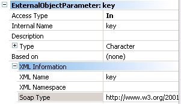

External Objects (EO) of the WSDL type allow us to add Web Services references to the KB from its WSDL. These EOs store all the related information (name, properties, methods, parameters, etc.) required for using the Web Service described in its WSDL. Note: the EO can be created manually by indicating each one of its properties or by using a wizard, WSDL Import, which can be accessed through the Tools option in the GeneXus menu under Reverse Engineer. PropertiesExternal ObjectName: name of the EO MethodsInternal Name: internal name of the method Parameters Access Type: IN, OUT, INOUT UseLet’s assume we’ve created an EO of the WSDL type called GoogleSearchService and we’ve defined a GoogleSearchService variable called &ws and a variable GoogleSearchResult variable &res (collection of GoogleResult). In our code we can do the following:
Event Enter
&res = &ws.doGoogleSearch(&key,&text, 0, 10, 0, "", 0, "", "", "")
EndEvent
Event Load
for &resultElement in &res.resultElements
&title = &resultElement.title
load
endfor
EndEvent
Here, doGoogleSearch is the Web Service method to be invoked in order to search for the text (&text) passed as a parameter. Then, the resulting values would be loaded into a grid. NotesThe Google Web Search API has been deprecated, for more information click here. |
| Backlinks | |
| Category:External object | WSDL Import Wizard |
| Xml SoapType property (SDT) |